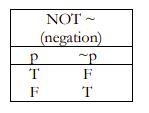
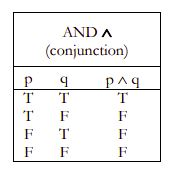
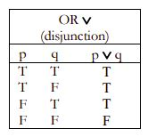
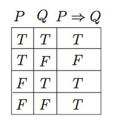
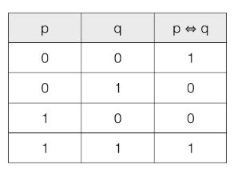

Table of truth
Contenu
Table of truth¶
truth table
A truth table is a logical tool used to evaluate the truth values of a logical expression based on all possible combinations of truth values for its variables.
A truth table is a tool that helps you analyze statements or arguments in order to verify whether or not they are logical, or true
.1. Not Statements¶
The “not” is simply the opposite or complement of its original value.
Here’s the table for negation:

\(P\) represents the original truth value.
\(\neg P\) is the negation of \(P\) .
2. And Statements¶
Here’s the truth table for p and q

Key points:
These statements are true only when both p and q are true
3. Or Statements¶
Here’s the truth table for p or q

Key points:
These statements are false only when both p and q are false
4. Implies Statements¶
Here’s the truth table for p implies q

Key points:
p implies q is false only when p is true and q is false.
In all other cases, 𝑝 implies q is true
5. Equivalence Statements¶
Here’s the truth table for p equivalent to q

Key points:
p equivalent to q is true when both 𝑝 p and 𝑞 q have the same truth value (both true or both false)
p equivalent to q is false when they have different truth values